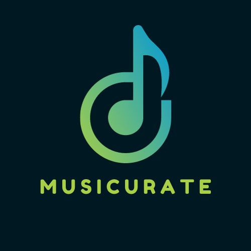
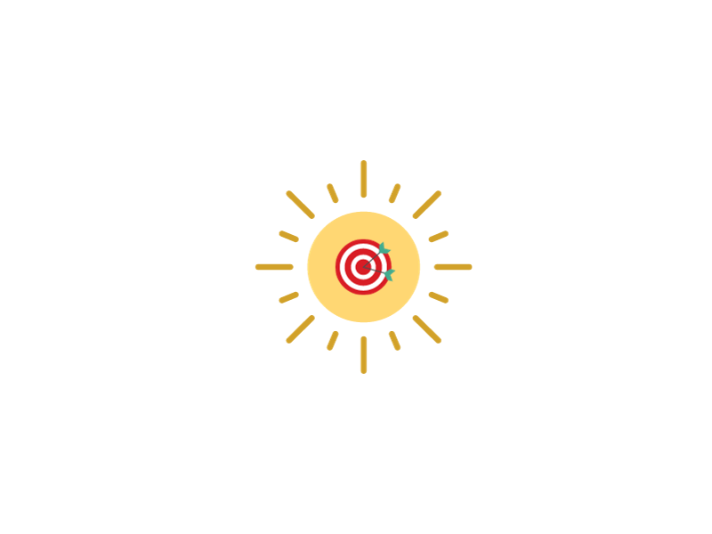

.js, .html, .css, .py, .c, and .java
Successfully hired and managed a team to develop
Laurier Fintech's website using AGILE methodology.
Mentored team members and facilitated skill development
workshops, enhancing the technical proficiency of the team.
Regularly communicated with professors and students to promote club events
and gather feedback.
This experience strengthened my ability to convey technical ideas
and collaborate effectively, developing
skills that are essential when working
in software development teams.
EXPERIENCE
Attended meetings to voice the opinions and concerns
of over 1800 students in Computer Science
Collected student input from various student bodies and councils.
PROJECTS
 
Musicurate is my full-stack project designed to enhance music discovery.
Leveraging Spotify's API, it empowers users to explore and connect
with their favorite music type like never before.
This website is my personal portfolio, showcasing some of my skills and experience
using HTML, CSS, and JavaScript.
MorningBot is a Discord bot that I developed using Python.
It is designed to help users start their day off right by providing them with
a motivational quote and a random song to listen to.
CONTACT
Thank you for reading about me! If you would like to get in touch, feel free
to contact me at any of the links below, or check out my resume!